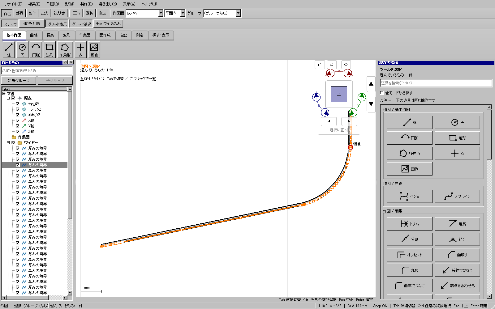

2026-11-10。実装 582b48681b63d8bcad9a08ba391dacc4f7267a73。Windows全体・配布版検証済み。正式ゲート tool-boundary-release-b-20261110。GitHub更新1。
滑らかにつながった曲線部分を一度に選択・強調・削除できること。隣接する直線、角、分岐は巻き込まず、未編集部分と参照ID、曲線の座標、元ソリッドを維持すること。閉じた輪郭を押し出す従来の操作も維持する。
| 対象 | 結果 |
|---|---|
| 厚み・治具・シェル | nativeエッジごとに出ていた境界を、新規生成時に一意に接続する滑らかな曲線ごとにまとめる。直線と曲線は分ける。 |
| ソリッドの丸め・面取り、曲面押し出しによる凹凸加工 | 離れたエッジまで一つのワイヤーへ詰めていた。接続した境界ごとに出力する処理へ統一した。 |
| 投影・通常押し出しなどの混合輪郭 | 閉じた輪郭のワイヤーを維持し、その中の滑らかな曲線部分をまとめて選択する。直線は個別の対象として残る。ホバーの範囲とクリック結果を合わせた。 |
| コピー・移動・鏡映・配列・独立固定 | 変換後の評価済み曲線にも同じ選択を適用する。作成元のfeature形式に限定しない。 |
| 回転・ロフト・スイープ・Boolean | ソリッドのnative位相と個別エッジ番号は変更しない。入力輪郭の選択と後続操作を回帰試験する。 |
| 近似・展開・型紙 | 曲面を再構成する対応レール、必要な折れ・切断位置、部材境界を保全する。製作に必要な分割を勝手に平滑化しない。 |
| 個別辺の参照・出力 | 明示的な個別辺選択は従来どおり一辺に限定する。共有kernelの境界出力APIや保存形式は変更しない。 |
曲線の再フィットや折れ線化で区間を消してはいない。正確な曲線を保持したまま、編集時のまとまりを修正した。既存の別ワイヤー同士を読み込み時に自動統合する処理は入れない。
固体面取りの境界が接続した鎖になっているという独立した検査は修正前に失敗し、修正後は面取りUI 3件が成功した。曲面押し出しUI 1件、混合曲線の選択・Ctrl切替・削除・Undo・保存再読込・コピーの回帰が成功した。
横断試験139件の初回は135成功・4失敗。投影結果の閉輪郭まで別ワイヤーへ分ける試行が、後続の押し出しを壊すことを検出した。この変更は取り消し、閉輪郭を維持して曲線部分だけ選ぶ方式へ修正した。最終投影27件と一覧・曲線選択13件が全件成功した。試験を弱めて通す変更はしていない。
最初の全体ゲートは配布UIのDelete試験で失敗を検出した。単独のoffscreen試験でも再現し、試験の実クリック・アクティブウィンドウ・フォーカスの不足を修正した。また、右クリック候補からの選択が滑らかな曲線の共通処理を通らない製品側の経路を発見し、失敗する回帰試験を追加して修正した。通常Windows表示とoffscreen表示の13件が修正後に全件成功した。中断したゲートaのログは保全する。
添付115投影.kcd2由来の非平面の窓枠面を通常UIで開き、厚み0.1 mm・中央・ソリッドと境界ワイヤーを生成。曲線のCtrlクリック、削除、Undo/Redo、保存を実入力で再生した。各工程の7試験はすべて成功した。
境界40本のうち84区間からなる滑らかな曲線1本を選択して削除すると39本になり、Undoで40本に戻る。取り消し後の保存文書は生成直後の文書とJSON全体が一致した。原本SHA256は f472858638de8413d47da0395e41b7655ca08c55bf3cfc2f256acf86946b1dca のまま。
実操作記録：out/tool-boundary-audit-20261110/owner-replay/。正式検証記録：out/verification/tool-boundary-release-b-20261110/。原本・前回重点配布フォルダーは上書きしない。
事前9件、CTest197件（skip0）、開発版UI728件、配布版UI728件、従来版自己試験が全件成功。配布フォルダーの通常起動もWindows表示で成功した。正式ゲートは約40分16秒であり、内部思考だけの時間ではない。
配布版でも添付由来モデルを開き、厚み生成と境界のCtrl選択・削除・Undo/Redo・保存の8試験が成功。取り消し後の保存文書は生成直後の文書とJSON全体が一致した。

配布ZIPは76,098,762バイト。SHA256 d56f18362026a7de677524fe73922096e7b1e0dec9f0933db02998383b831d45。実行ファイルSHA256 26adc5d5ad6a34790d3e44caa843f0900ec948603148b06344623d332b844e6e。公開物のタグ・最新リリース・サイズ・SHA256をGitHub側の値と照合済み。
前回記録した密な3D境界からの穴付き面再生成の時間超過は、今回の曲線選択修正で解決したとは扱わない。全形状・常時60fpsの保証でもない。